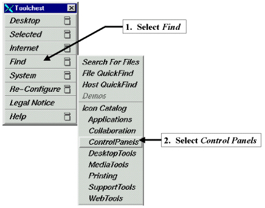

Illustration 5: DISPLAY SETTING THROUGH CONTROL PANELS

Illustration 4: TOOLCHEST MENUS

Illustration 5: DISPLAY SETTING THROUGH CONTROL PANELS
Illustration 6: LINE RATE WINDOW

If the Frame Rate and Swap Rate are NOT set to 60Hz continue at Step 5 below.
If the Frame Rate and Swap Rate IS set to 60Hz, this section is complete. Select [File] and [Exit], Close the Toolchest Menu, Right click on the background, and from the drop down box select [Logout (yes)] and reboot Signa. Continue with Section 5- SIGNA HOST GAMMA SETUP- NEC 1880SX 10.X (Excite) Systems.